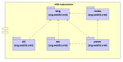

Xj3D VRML Implementation Overview
Author: Justin Couch
Last updated: $Date: 2001/07/04 11:45:04 $
Revision: $Revision: 1.2 $
Intro
From an application developer's standpoint, the VRML implementation has two
central requirements - abstract representation of VRML nodes, regardless of
their implementation, and the ability to create a parser for VRML files so
that VRML content may be used in their application.
Background
At the core of VRML is a basic data
model of how the scene should be represented - regardless of the method
of transmission (eg binary, XML or utf8). When building the XML parser we
needed some way of abstracting the core representation from the parsing
process as we had many different ways of being provided with VRML content
while the old code was fixed towards only dealing with UTf8 content. This
wedding of the code didn't make life easy so we set about to build a
separate system that was robust and flexible, as required by the upcoming
componentisation of VRML.
As developers, we also wanted to make sure that we could change parts when
needed. The old codebase was fixed in use of Java3D. One of the other parts of
the Web3D Consortium's Source code group is the
Chisel/Vorlon
code that is now in the public domain. This does not provide any rendering
capabilities at all, but still does all it's own parsing. Like the original
Xj3D code, it is poorly structured and requires a great deal of effort to
compile the code from scratch. It would be nice if overtime the two codebases
could share common chunks of functionality, such as basic file parsing.
Motivation
One of the many things about standard Java development is the establishment of
many core, reusable API sets. One of the missing features of VRML was a
collection of reusable API sets. While we had the EAI and JSAI for driving
already created VRML content, there was a critical lack of standard APIs for
allowing any arbitrary application to use and generate VRML content.
Since we were already delving around trying to create abstract representations
of the VRML scenegraph, we decided that there was only a small amount of extra
work needed to produce a generalised representation that allows componentisation
of the VRML handling process. Taking into account the good API design ideas from
other areas of Java, we have built a flexible piece of kit that allows user to
take only the amount of functionality required. The result that you see here
are separate components for a parser, node representation and runtime handling
based on the other abstract nodes.
Structural Overview
The VRML implementation is based around three public packages of functionality.
As part of the Xj3D codebase, we also provide another non-public package that
is the implementation of a parser for UTF8 content. Each of these packages
provide a set of generic interfaces that can be used to interact with the
underlying implementation without knowing or caring what the implementation
is.
From the main architecture diagram
, all the items represented in this series of documents relates to the VRML
Component. This section does not deal with rendering implementation specific
details, that is left to their appropriate documents.
Code Layout
Within the VRML Component there are five major packages that hold the basics
of the system. These are represented in figure 1. Within each package there
may be sub-packages that provide additional functionality, but they are not
required to use the basic functionality.

Figure 1: UML Structure diagram of the VRML Component and its major
packages.
The core package lang holds information that is central to the
basic VRML language details. Principally, these are exceptions in the current
iteration, but may include other classes in later revisions. A utilities
package is provided for users with a number of non-essential, but useful tools
that might be used in various implementations of the interfaces.
All packages use the lang for some functionality. The node
representation and low-level parser API factories then abstract the VRML
scene graph and parsing process. These also depend on the core package for
some information representation. At the top of the dependency list is the
parser package. This represents a particular parser implementation
allowing the user to obtain a stream and then generate nodes and information
from the stream containing VRML.
In the future, we expect there to be one more package available here - the
interface to the various scripting engines. It is not included because we have
not started the specification of this interface.
Package Summaries
This section defines a basic outline of each package and its functionality.
Use the links in each header to jump to implementation specific details.
The core package provides classes and interfaces that represent the common
functionality used by all the VRML code. Currently this is mainly exceptions
that pass error information about a caller providing invalid information for
fields and nodes within a VRML file.
The util package contains utility classes that help build content and
implementations of the other interfaces in this component. For example, the
basic interfaces just provide raw field information is it is read from a file.
Before using this information, we want to check that the values are within
range etc for that field. The utils classes provide easy, convenient handling
of this.
Here you will find the basic representation of each of the node types defined
in the VRML Abstract data model. As
the VRML specification is extensible and we can never know which nodes might
be provided, the interfaces do not present every concrete node. Instead they
provide enough typing information to know how to assemble themselves within a
scenegraph structure and runtime information.
This is the Simple API for VRML parsing. A set of callback structures that
can be registered with a VRML parser to give a serialised stream of information
as a file containing VRML content is created. This is modelled on the widely
used XML SAX API.
An abstract representation of the bootstrap mechanism required to create a
VRML parser without knowing the implementation classes. Allows the swapping
of different parser implementations without effecting the rest of the
application.
Scripting
Scripting is such a large part of the VRML specification that it works its
way into all of the above packages. While there are packages devoted to
individual scripting languages, and even different versions of the
specification in any one language, the effects are that the scripting classes
are spread through many different packages.
At the core of the codebase is a system designed to support any language that
a user may care to implement. Although the VRML97 specification only describes
Java and ECMAScript with a normative section, it is possible that research
groups would like to implement other languages (eg J/Python). This section is
devoted to providing a basic infrastructure for any language.
Being an all Java implementation, the most important place to start is by
supporting the existing Java specification. The JSAI specification uses the
vrml, vrml.node and vrml.field packages
to provide functionality. This explains how we build a Java based scripting
engine to support JSAI scripts.
Not implemented yet.
References